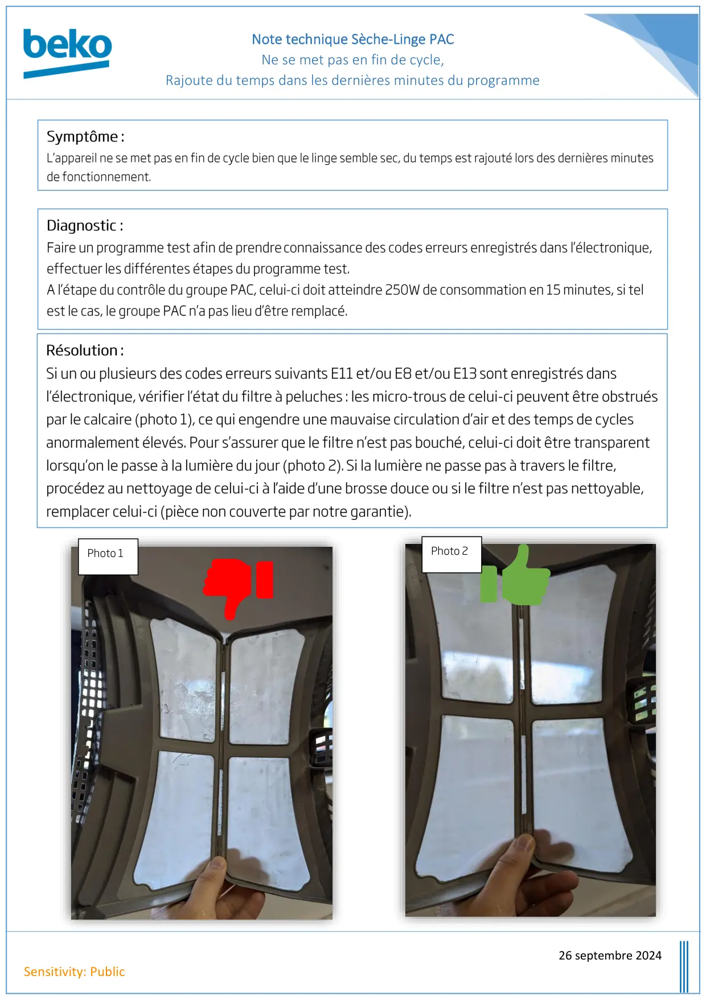

Note Technique seche linge PAC Ne se met pas en fin de cycle

Note technique Sèche-Linge PACNe se met pas en fin de cycle,Rajoute du temps dans les dernières minutes du programme26 septembre 2024Sensitivity: PublicPhoto 1Photo 2
1 / 1


Gros électroménager
Ressources techniques SAV — Beko · Grundig · Whirlpool · Hotpoint · Indesit.
